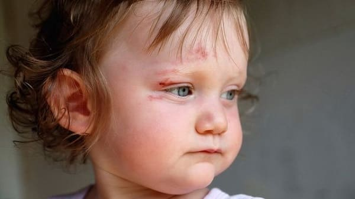
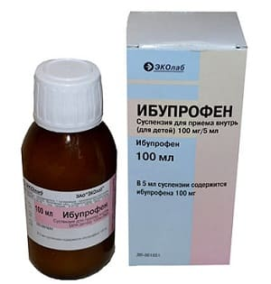
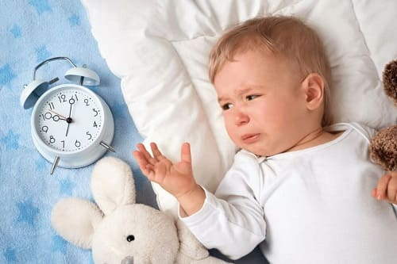

Самая важная вещь, которую надо знать о травмах головы, — это то, что они редко бывают серьезными. Череп приспособлен для того, чтобы выдерживать сильные удары и ушибы, получаемые в детстве. Хотя падение с мебели на твердый кафельный пол или падение на бегу с ударом головой о твердую поверхность наверняка оставят приличную шишку или синяк, мозг, находящийся внутри, практически никогда не повреждается. Вот что вам нужно помнить, если ваш ребенок ударился головой.
ЧТО НУЖНО ДЕЛАТЬ НЕМЕДЛЕННО
Для начала не паникуйте. Если ребенок чувствует, что вы спокойны, он тоже, скорее всего, успокоится. Дальнейшие действия.
Лед. Положите несколько кусочков льда и немного воды в герметичный полиэтиленовый пакет и приложите его к месту удара на 20 минут. Это мягкое, не слишком холодное успокоительное будет легче переноситься распухшим местом удара, чем твердый пакет со льдом. Затем на несколько минут уберите его, и приложите снова на 20 минут. Это ослабит боль, намного уменьшит возможный размер шишки и ускорит поправку. Мы считаем, что это стоит усилий.
Обезболивающие препараты. У вашего ребенка наверняка будет головная боль. Как только он успокоится, ненадолго уберите лед и дайте ему ибупрофен или ацетаминофен.

Остановите кровотечение. Если есть порез, будет сильное кровотечение. Заверните колотый лед в полотенце вместо пакета со льдом, чтобы вы могли придавить для остановки кровотечения. Вы можете осмотреть рану позднее, когда все успокоятся, чтобы решить, нужно ли накладывать швы.
Проверьте зрачки. Когда ребенок успокоится, посмотрите на его зрачки. Если они одинакового размера и не выглядят необычно расширенными или суженными, вы можете быть спокойны, что травма, скорее всего, несерьезна.
КОГДА БЕСПОКОИТЬСЯ
Большинство обычных травм головы не требуют визита к врачу. Тем не менее вы должны знать опасные симптомы, в отсутствие которых необходимо убедиться. Наблюдайте за своим ребенком в течение двенадцати часов. Если у него проявляется любой из следующих симптомов, возможно, потребуется неотложное посещение отделения помощи. По дороге вы можете позвонить своему врачу.
Потеря сознания. Если ваш ребенок терял сознание хоть на несколько секунд, это может означать, что удар был достаточно сильный, чтобы вызвать ушиб мозга или кровоизлияние в мозг. Если вы слышали или видели, что ребенок начал плакать сразу же после падения, это означает, что он не терял сознания.
Не давайте ребенку заснуть примерно в течение часа. Большинство детей захотят спать после такой травмы. Тем не менее лучше не давать ребенку заснуть некоторое время, чтобы вы могли понаблюдать за его состоянием. Когда час пройдет, можно положить ребенка отдыхать. |
Ребенка трудно разбудить. Вашему ребенку, конечно же, захочется спать, и это нормально. Но не давайте ему спать больше одного часа, после чего попытайтесь его разбудить. Если травма получена поздно вечером, спите рядом с ребенком и заведите будильник, чтобы он звонил каждые два часа. Слегка расталкивайте ребенка, пока он хотя бы не откроет глаза и не будет выглядеть раздраженным тем, что его разбудили. Если вам тяжело разбудить ребенка, сразу же отправляйтесь в ближайшее отделение неотложной помощи.

Измененное состояние психики. Это означает, что ребенок не фокусируется на вас, не смотрит вам в глаза и не отвечает на вопросы и просьбы. Жалобы на головную боль и сопротивление, когда вы пытаетесь приложить лед, — хорошие признаки того, что с ним все в порядке.
Рвота. Многих детей может пару раз вырвать после того, как они получили большую шишку, или из-за плача, кашля, подавившись, или просто из-за удара по черепу. Это ожидаемо. Тем не менее если вашего ребенка вырвало три или более раза, это может быть признаком внутренней травмы.
Потеря равновесия. Многие дети жалуются на головокружение. Это ожидаемо. Но если ваш ребенок действительно теряет равновесие и постоянно спотыкается на ходу, отправляйтесь в отделение неотложной помощи.
Долгий плач или сильная головная боль. Если ваш ребенок не успокаивается по истечении часа или продолжает жаловаться на сильную головную боль через час после приема лекарства, лучше отвести его на осмотр к врачу, если он еще принимает, или в отделение неотложной помощи, если рабочий день закончен. |
Здоровье ребенка от докторов Сирс / Сирс У. и др.